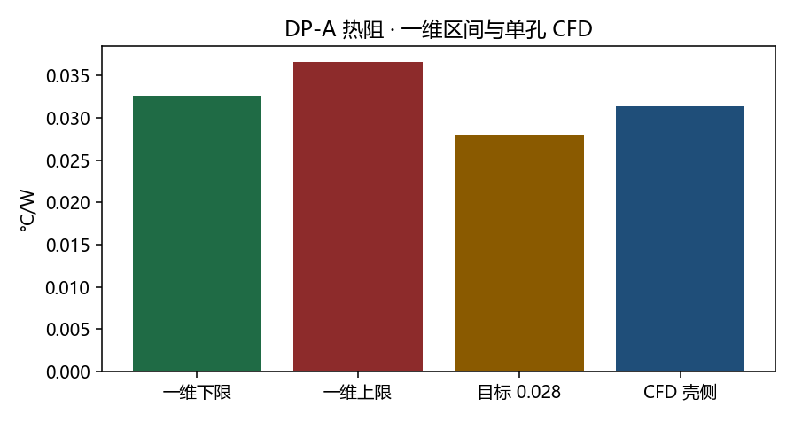

对象是一个射流胞，不是 95×75 整板。设计点边界与一维 DP-A 的 216 孔分配一致：GPU 1.60 L/min，单孔质量流 1.224938e-04 kg/s，壁面热流 579282 W/m²，入口 313.15 K。网格孔径是 D=0.40 mm 圆孔，胞 2.4×3.0 mm。
主场
design/cfd/uc01b_2.4x3.0lessmesh/logs/fluent_cht_less_m425_gpu.log，iter 380，转录写明 solution is converged。更粗的 bc216（2,115,436 HEXA，iter 421）压降 1091.5 Pa、TIM 底 342.10 K，用来看网格变化，不另作一个设计点。m425 面平均
| 量 | 值 |
|---|---|
| 网格 | 4,259,680 HEXA，底壁边界层首层 2.5 μm |
| 入口 / 出口温度 | 313.15 K / 320.91 K |
| TIM 底 / 铜–水 / TIM–铜 | 341.385 K / 326.600 K / 336.130 K |
| 热流回读 | 579282 W/m² |
| 静压降 | 1087.09 Pa（出口表压 0） |
| 两 die 加热 | 900.90 W（单胞 4.1708 W × 216） |
| 孔速 / Re_D | 0.982 m/s · 597 |
| R(T_TIM−T_in) | 0.03134 °C/W |
| R_conv(T_铜水−T_in) | 0.01493 °C/W |

和一维怎么并读
| 一维 DP-A，GEO D=0.50 | CFD 单孔，网格 D=0.40 | |
|---|---|---|
| 孔速 / Re | 0.629 m/s · 478 | 0.982 m/s · 597 |
| 壳–进液 | 0.0326–0.0366 °C/W | 0.0313 °C/W（含 TIM 与铜，不含封装） |
| 对流热阻 | 短槽模型 0.0252 °C/W | 0.0149 °C/W |
| 孔口压降 | 一维局部阻力 0.35 kPa | 胞内静压降 1.087 kPa |
CFD 壳侧 0.0313 °C/W 落在一维下限 0.0326 与上限 0.0366 之间，靠近下限。Re≈597，仍低于 Martin 1977 的 2000，不用阵列关联式外推整板。胞压降远小于 20 kPa 的板内上限，但它不含歧管和 216 孔分配不均。
能量闭合、y+ 和整板模型这一页没有新数字。12 层网格续算仍在进行，不写入本结论。